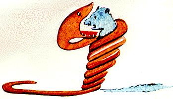
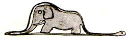

The Tomato Way
Tomatoes love massive comprehensible input. Featuring Le Petit Prince.

Tomatoes love massive comprehensible input. Featuring Le Petit Prince.
Bold - original text
Normal - English translation (as literal as possible)
Italic - Literal translation (or grammar explanation)
Don't try to memorize every word, the goal here is to get as much comprehensible input as possible in a short time. Try to understand each sentence and move on.
Lorsque j'avais six ans j'ai vu, une fois
When I was 6 (had 6 years) I've seen, once (one time)
une magnifique image
a magnificent picture
dans un livre sur la Forêt Vierge qui s'appelait "Histoires Vécues"
in a book about (on) the primeval (virgin) forest which is called (called herself) "True stories" (Stories Lived)
Ça représentait un serpent boa qui avalait un fauve
It represented a boa constrictor who was swallowing a tiger
Voilà la copie du dessin
Here's a copy of the drawing
Now here's the entire paragraph! If you forget the meaning of a word or a sentence, just scroll back.
Lorsque j'avais six ans j'ai vu, une fois, une magnifique image, dans un livre sur la Forêt Vierge qui s'appelait "Histoires Vécues". Ça représentait un serpent boa qui avalait un fauve. Voilà la copie du dessin.

On disait dans le livre
In the book it said (we said in the book)
Les serpents boas avalent leur proie tout entière, sans la mâcher
The boa constrictors swallow their prey whole (all entire), without chewing it (without it chewing)
Ensuite ils ne peuvent plus bouger
Then they can no longer move
et ils dorment pendant les six mois de leur digestion
and they sleep through (during) the 6 months of their digestion
J'ai alors beaucoup réfléchi sur les aventures de la jungle
I've pondered deeply, then, over (I have then much thought on) the adventures of the jungle
et, à mon tour, j'ai réussi, avec un crayon de couleur, à tracer mon premier dessin
and, (at my turn) I've succeeded, with a colored pencil, in making my first drawing
Mon dessin numéro 1. Il était comme ça
My first drawing. It was like this
On disait dans le livre: "Les serpents boas avalent leur proie tout entière, sans la mâcher. Ensuite ils ne peuvent plus bouger et ils dorment pendant les six mois de leur digestion".
J'ai alors beaucoup réfléchi sur les aventures de la jungle et, à mon tour, j'ai réussi, avec un crayon de couleur, à tracer mon premier dessin. Mon dessin numéro 1. Il était comme ça:

J'ai montré mon chef d'oeuvre aux grandes personnes
I've showed my masterpiece to the grown-ups (big people)
Elles m'ont répondu : "Pourquoi un chapeau ferait-il peur ?"
They answered (they have me responded) : Why would anyone be frightened by a hat? (why would a hat make fear)
Mon dessin ne représentait pas un chapeau
My drawing didn't represent a hat
Il représentait un serpent boa qui digérait un éléphant
It represented a boa constrictor who was digesting an elephant
J'ai alors dessiné l'intérieur du serpent boa
I then drawed the inside of the boa constrictor
afin que les grandes personnes puissent comprendre
so that the grown-ups can (subjunctive of "pouvoir", used due to "afin que") understand
Elles ont toujours besoin d'explications
They still need the explanations (they have still need of explanations)
Mon dessin numéro 2 était comme ça
My second drawing was like this
J'ai montré mon chef d'oeuvre aux grandes personnes et je leur ai demandé si mon dessin leur faisait peur.
Elles m'ont répondu : "Pourquoi un chapeau ferait-il peur ?"
Mon dessin ne représentait pas un chapeau. Il représentait un serpent boa qui digérait un éléphant. J'ai alors dessiné l'intérieur du serpent boa, afin que les grandes personnes puissent comprendre. Elles ont toujours besoin d'explications. Mon dessin numéro 2 était comme ça:

Les grandes personnes m'ont conseillé de laisser de côté les dessins de serpents boas ouverts ou fermés
The grownups have advised me (me have advised) to lay aside the drawings of boa constrictors, whether from the outside or the inside (open or closed)
et de m'intéresser plutôt à la géographie, à l'histoire, au calcul et à la grammaire
and to be interested instead in geography, history, arithmatic and grammar
C'est ainsi que j'ai abandonné, à l'âge de six ans, une magnifique carrière de peinture
That's why (it's like that that) I gave up, at the age of six, a magnificent career as a painter
J'avais été découragé par l'insuccès de mon dessin numéro 1 et de mon dessin numéro 2
I had been discouraged by the failure of my first drawing and my second drawing
Les grandes personnes ne comprennent jamais rien toutes seules
The grownups never understand anything by themselves (all alone)
et c'est fatigant, pour les enfants, de toujours leur donner des explications
and it's tiresome, for the children, to always give them explanations.
Les grandes personnes m'ont conseillé de laisser de côté les dessins de serpents boas ouverts ou fermés, et de m'intéresser plutôt à la géographie, à l'histoire, au calcul et à la grammaire. C'est ainsi que j'ai abandonné, à l'âge de six ans, une magnifique carrière de peinture.
J'avais été découragé par l'insuccès de mon dessin numéro 1 et de mon dessin numéro 2. Les grandes personnes ne comprennent jamais rien toutes seules, et c'est fatigant, pour les enfants, de toujours leur donner des explications.
J'ai donc dû choisir un autre métier et j'ai appris à piloter des avions
I had to, therefore, choose another profession and I've learned to pilot airplanes
J'ai volé un peu partout dans le monde
I've flown all over the world (a little everywhere in the world)
Et la géographie, c'est exact, m'a beaucoup servi
And it's true that geography has been pretty useful to me (And the geography, it's exact, me has much served)
Je savais reconnaître, du premier coup d'oeil, la Chine de l'Arizona
I knew how to distinguish (recognize), at first glance, China from Arizona
C'est utile, si l'on est égaré pendant la nuit
It's useful, if we are lost at night
J'ai donc dû choisir un autre métier et j'ai appris à piloter des avions. J'ai volé un peu partout dans le monde. Et la géographie, c'est exact, m'a beaucoup servi. Je savais reconnaître, du premier coup d'oeil, la Chine de l'Arizona. C'est utile, si l'on est égaré pendant la nuit.
J'ai ainsi eu, au cours de ma vie, des tas de contacts avec des tas de gens sérieux
I have had, then, in the course of my life, a lot of encounters with a lot of serious people
J'ai beaucoup vécu chez les grandes personnes
I have lived a great deal among the grownups
Je les ai vues de très près
I have seen them very closely (I them have seen of very close)
Ça n'a pas trop amélioré mon opinion
It didn't improve my opinion too much
J'ai ainsi eu, au cours de ma vie, des tas de contacts avec des tas de gens sérieux. J'ai beaucoup vécu chez les grandes personnes. Je les ai vues de très près. Ça n'a pas trop amélioré mon opinion.
Quand j'en rencontrais une qui me paraissait un peu lucide
When I met one of them who seemed (to me) a bit clear-headed
je faisais l'expérience sur elle de mon dessin no.1 que j'ai toujours conservé
I tried the experiment of showing him (I was doing the experiment on her) my first drawing , which I've always kept
Je voulais savoir si elle était vraiment compréhensive
I wanted to know if this person was truly understanding
Mais toujours elle me répondait: "C'est un chapeau."
But they always answered: "It's a hat."
Alors je ne lui parlais ni de serpents boas, ni de forêts vierges, ni d'étoiles
So I never talked to this person about boa constrictos, or primeval forests, or stars
Je me mettais à sa portée
I would bring myself down to his level (I me placed at his reach)
Je lui parlais de bridge, de golf, de politique et de cravates
I talked to this person about bridges, golf, politics and neckties
Et la grande personne était bien contente de connaître un homme aussi raisonnable
And the grownup was quite content to have met such a sensible man
Quand j'en rencontrais une qui me paraissait un peu lucide, je faisais l'expérience sur elle de mon dessin no.1 que j'ai toujours conservé. Je voulais savoir si elle était vraiment compréhensive.
Mais toujours elle me répondait: "C'est un chapeau."
Alors je ne lui parlais ni de serpents boas, ni de forêts vierges, ni d'étoiles. Je me mettais à sa portée. Je lui parlais de bridge, de golf, de politique et de cravates. Et la grande personne était bien contente de connaître un homme aussi raisonnable.